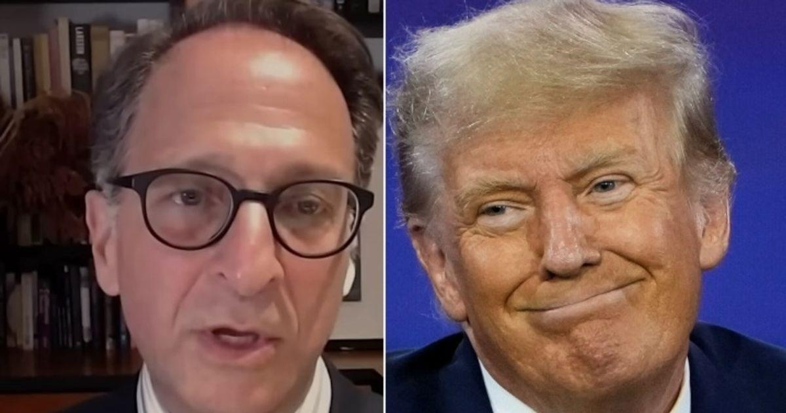

Ex-Prosecutor Andrew Weissmann Predicts Trump's Fate After Audio ReleaseFormer federal prosecutor Andrew Weissmann said new audio of Donald Trump admitting he had classified documents after leaving the White House is extremely bad news for the former president’s defense. “This is game over if you are following the facts and the law,” Weissmann told MSNBC’s Lawrence O’Donnell. “He’s charged with having classified information and knowing that he had classified information.” The recording, he said, makes it “absolutely clear” that both elements are true, and added that the audio is just one piece of “a massive mountain of evidence” against the former president. Trump pleaded not guilty earlier this month after he was indicted on 37 counts related to the alleged mishandling of classified documents as well as obstructing government efforts to get that material back. Weissmann said the case is no longer about the facts so much as whether the trial takes place before the election and whether a jury will follow the law when that trial does take place. See his full conversation with O’Donnell and national security attorney Bradley Moss below: |
 |